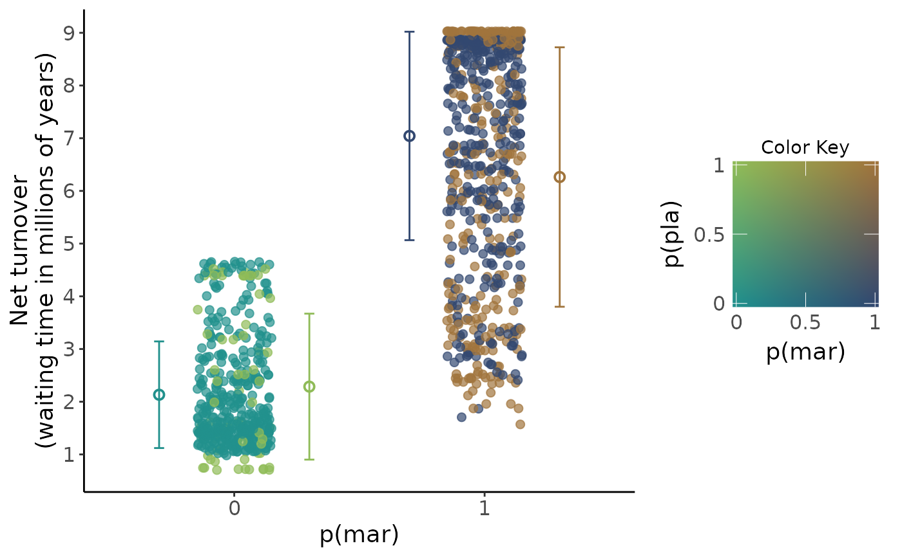

R/utilhisse.R
m_scatterplot_cp.RdA function to plot a jittered scatterplot of (model-averaged) diversification rates in the alternative states.
m_scatterplot_cp( processed_recon, parameter = "turnover", focal_character = c("prob_0x", "prob_x0"), focal_character_label, second_character_label, colors, plot_as_waiting_time = FALSE )
| processed_recon | An object produced with |
|---|---|
| parameter | The diversification parameter to be plotted on the y axis. Possible options are turnover, extinct.frac, net.div, speciation, extinction |
| focal_character | Specifies the x axis. Either |
| focal_character_label | Label for the x axis of the scatterplot and two-dimensional color gradient. This should match the focal probability. |
| second_character_label | Label for the y axis of the scatterplot and two-dimensional color gradient. |
| colors | A vector of three colors in the order: (1) zero color (color when the two traits are in state 0), (2) horizontal_color (color to interpolate towards state 1 of the focal character) and (2) vertical_color (color to interpolate towards state 1 of the second character). See |
| plot_as_waiting_time | Logical, whether to convert the rate to waiting time (1/rate) |
A scatterplot with focal probability (0 or 1) on the x axis and the chosen diversification parameter on the y axis with means and error bars (mean +/- SD) for each state color coded with in two-dimensional colorplane.
library("colorplaner") data("diatoms") processed_muhisse <- m_process_recon(muhisse_recon=diatoms$muhisse_recon) m_scatterplot_cp( processed_recon = processed_muhisse, parameter = "turnover", focal_character = "prob_0x", focal_character_label = "p(mar)", second_character_label = "p(pla)", colors = c("#21908CFF", "#440154FF", "#FDE725FF"), plot_as_waiting_time = TRUE) + labs(y="Net turnover\n(waiting time in millions of years)")#> # A tibble: 4 x 9 #> both_prob MN SD LB UB wanted prob_0x prob_x0 focal_character #> <fct> <dbl> <dbl> <dbl> <dbl> <dbl> <dbl> <dbl> <fct> #> 1 0.0 2.13 1.01 1.12 3.14 2.13 0 0 0 #> 2 1.0 7.04 1.98 5.07 9.02 7.04 1 0 1 #> 3 0.1 2.29 1.38 0.902 3.67 2.29 0 1 0 #> 4 1.1 6.26 2.46 3.80 8.72 6.26 1 1 1